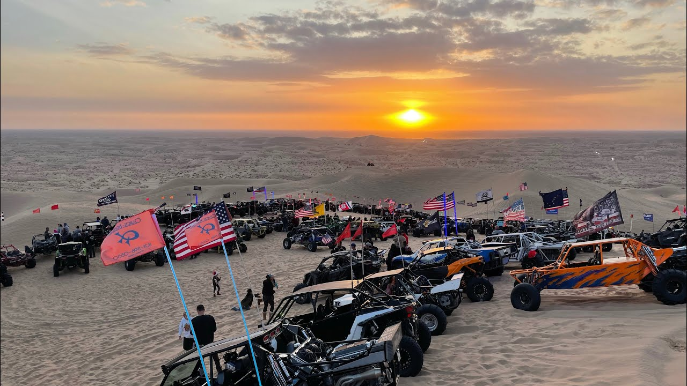
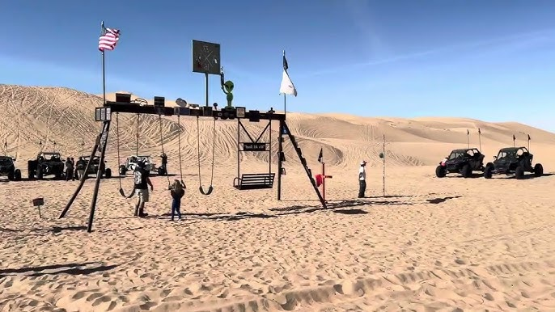
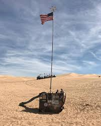
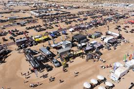
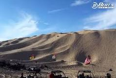

Oldsmobile hill is the dune everyone likes to go to. Its never empty, day and night. People ride their vehicles up and down for fun. At night people blow giant fireworks. All the lighted whips make such a pretty view from the top of the dune. Oldsmobile is 590 and ft long. Everyone likes to race eachtother up the dune, but if you go too fast you can tear a belt and have to replace it.
Sunset Hill

Sunset Hill is near the entrance of Glamis. It is next to the Osborne LookOut. People go to sunset hill everyday to watch the sunset. It is a giant dune where people park their cars and watch the sunset. Everyone plays their music, eat their snacks and just wait for the sun to come down. Everyday the susnet is different colors so every trip to susnet hill is a different experience.
Swingset

This place is its literal name. In the middle of the desert there is a metal swingset. There is also a tether ball pole and a volleyball court. People just go for fun. On the swingset bars brands put placs and placs are also placed in memorial of those who loved Glamis.
Flag Poles

There are two different flag poles in the middle of the desert. One is a memorial and the other is a firefighters memorial. On each pole there are many placs. People put images of people who loved glamis and images of firefighters that helped put out a fire and that also loved glamis. On veterans weekend there is an event. Everyone drives their vehicles to the memorial flag pole and watches the jet show.
Vendors Row

Vendors Row is a mall. There are many clothes, food, and tool tents available to shop at. There is one big tent that is very popular. They make the Famous Glamis T-shirts. Every Year for every holiday they make a different design for that specific holiday. Other stores also make shirts for a specific holiday but its not as popular as the other store. If one of your vehicles is broken, you can bring it to vendors row to buy new tools or take it to the beach shop to get it repaired.
China Wall

China Wall is a giant dune. Its one of the largest at Glamis. Its very steep and if you go down from the top its quite scary because if your on a qaud, the quad might shut off on you and your going down the dune without being able to control the speed your quad is going. The height of China Wall is unknown but its taller than Oldsmobile hill.